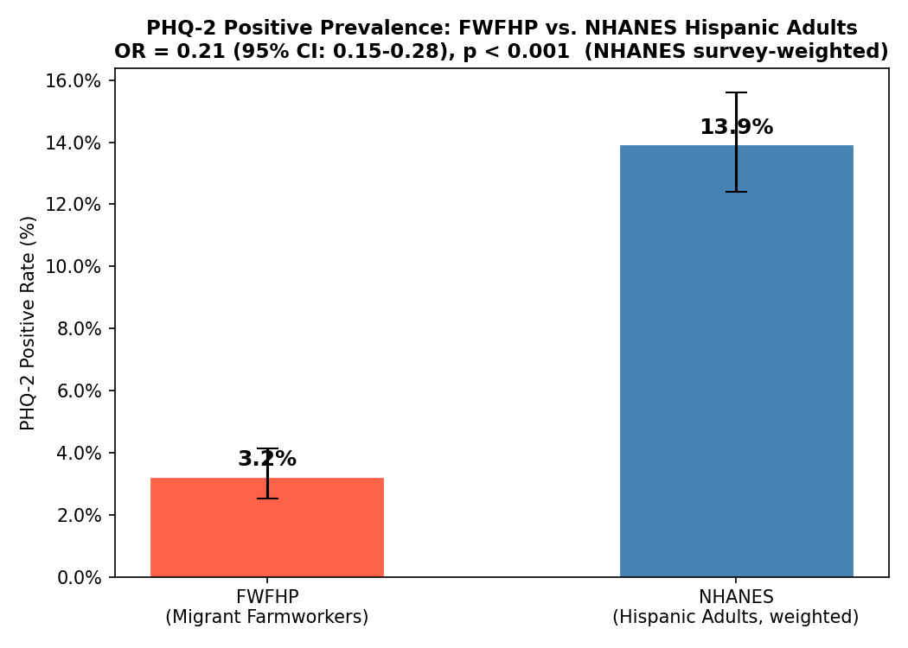
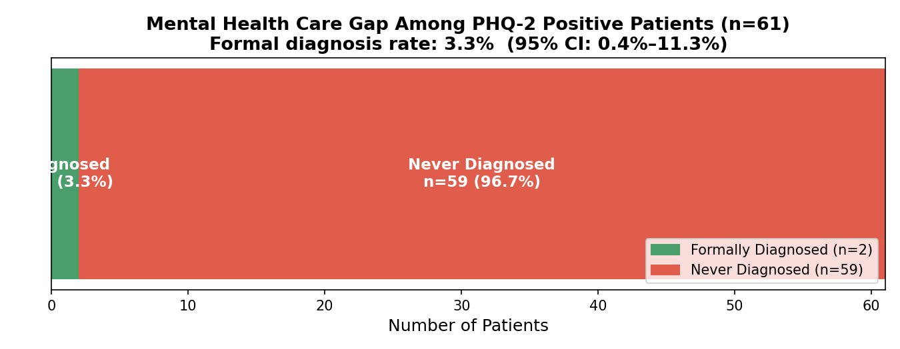
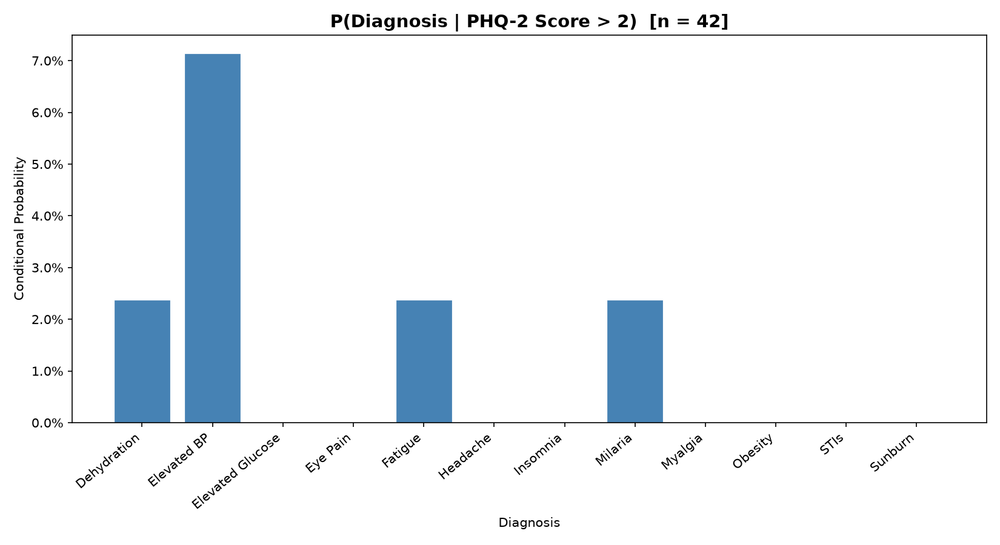
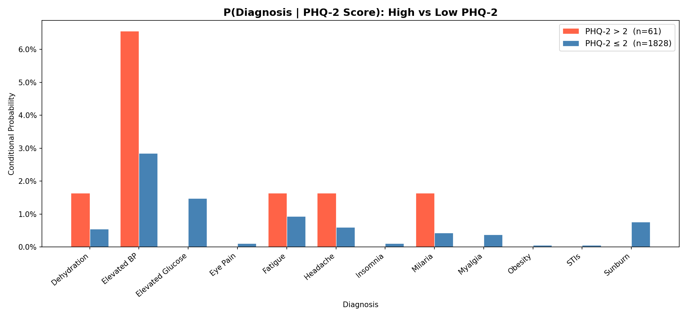
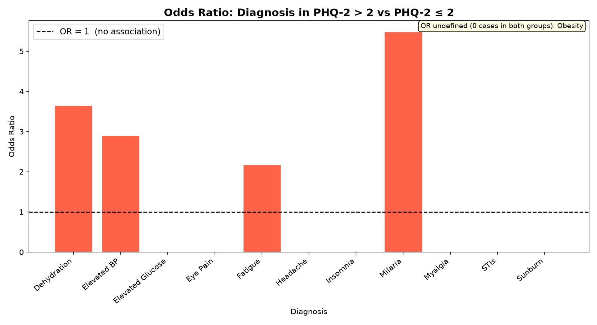
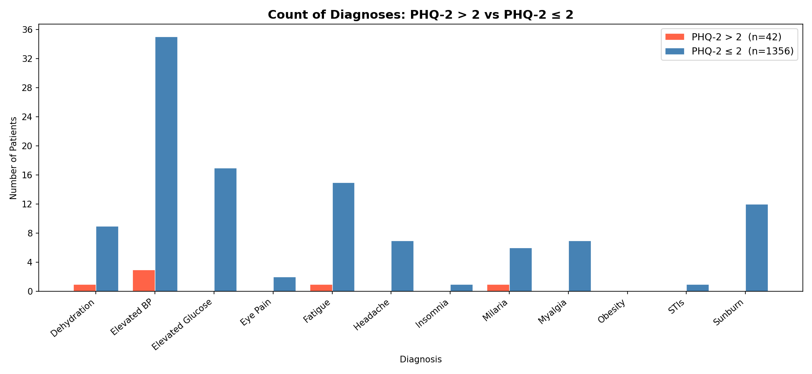
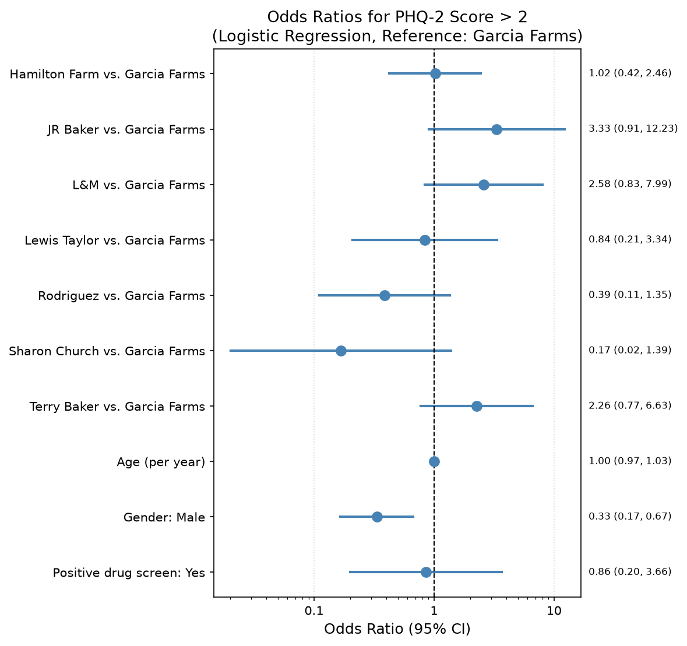

Farm Worker Family Health Program
PHQ-2 Mental Health
Screening Analysis
Night Camp Data — July 2026
Study Context
02 / 14Background
FWFHP is a night clinic serving migrant farmworkers in Moultrie, GA — a population with limited access to routine healthcare
The PHQ-2 is a two-question depression screening tool. A score > 2 is the clinical threshold for possible depressive symptoms
Clinical data was collected via REDCap from 2,074 records (1,889 adults) across 9 farm camps over the 2024–2026 seasons
NHANES 2021–23 provides a national Hispanic-adult reference (n = 912 screened), survey-weighted for comparison
Research Questions
Are farmworkers more likely to screen positive for depression than the national Hispanic average?
When they do screen positive, do they receive a formal mental health diagnosis?
Do positive screens co-occur with physical health conditions like heat illness or elevated blood pressure?
PHQ-2 Score Distribution
03 / 14Positive Screen — PHQ-2 > 2
61
3.2% of adults
Screened positive for
depressive symptoms
Negative Screen — PHQ-2 ≤ 2
1,828
96.8% of adults
Below the clinical
concern threshold
PHQ-2 > 2 Prevalence vs. National Reference
04 / 14
Odds Ratio
0.21
95% CI: 0.155 – 0.275
Significance
p = 5.7 × 10−27
Design-aware z-test, z = −10.75
Interpretation
~5× lower odds
FWFHP adults screen positive at far lower rates than the survey-weighted national Hispanic-adult average (3.2% vs. 13.9%)
The Care Gap: Screened Positive, Never Diagnosed
05 / 14
96.7%
of PHQ-2 positive patients
never formally diagnosed
59 of 61 patients who screened positive for depression received no mental health diagnosis — despite a clinical trigger on the PHQ-2.
Formal diagnosis rate: 3.3%
(95% CI: 0.4% – 11.3%, Clopper-Pearson)
Depression & Anxiety Diagnoses Recorded (N = 1,896)
06 / 14| Diagnosis | Count |
|---|---|
| F32.0 — Mild Major Depressive Disorder | 1 |
| F32.1 — Moderate Major Depressive Disorder | 2 |
| F32.2 — Severe Major Depressive Disorder | 1 |
| F32.0 — MDD with Psychotic Features | 0 |
| F41.1 — Generalized Anxiety Disorder | 1 |
61 patients screened positive for depressive symptoms; only 2 were formally diagnosed (1 mild, 1 moderate MDD). Just 5 depression/anxiety diagnoses appear in the entire cohort of 1,896.
Co-occurring Physical Diagnoses Analyzed
07 / 14P(Diagnosis | PHQ-2 > 2)
08 / 14
Conditional probability of each physical diagnosis among the 61 patients who screened positive (PHQ-2 > 2). Elevated BP is the most common co-occurring condition at 6.6%.
Co-occurring Conditions: High vs. Low PHQ-2
09 / 14
Red = PHQ-2 > 2 (n=61) · Blue = PHQ-2 ≤ 2 (n=1,835) · No diagnosis reached statistical significance after Benjamini-Hochberg FDR correction — results are hypothesis-generating.
Odds Ratios: Co-occurring Conditions
10 / 14
Raw Diagnosis Counts by PHQ-2 Group
11 / 14
Red = PHQ-2 > 2 (n=61) · Blue = PHQ-2 ≤ 2 (n=1,835) · The scale disparity between groups reflects the small positive cohort — ORs are more informative than raw counts here.
Predictors of a Positive PHQ-2 Screen
12 / 14
Logistic regression (adults 18+)
Predictors: Camp, Age, Gender, Drug Screen
Reference: Garcia Farms · Log-scale x-axis
N = 1,827 · 3R Harvesting & Transgender excluded (separation)
Significant — p = 0.002
Gender: Male — OR = 0.33
Males are significantly less likely to screen positive (approximately 3× less likely than females).
Not Significant
Camp, age, and drug-screen result were not statistically significant predictors of PHQ-2 positivity.
Logistic Regression Results
13 / 14| Variable | Odds Ratio | 95% CI | p-value |
|---|---|---|---|
| Camp (vs. Garcia Farms) | |||
| Hamilton Farm | 1.02 | 0.42 – 2.46 | 0.963 |
| JR Baker | 3.33 | 0.91 – 12.23 | 0.070 |
| L&M | 2.58 | 0.83 – 7.99 | 0.100 |
| Lewis Taylor | 0.84 | 0.21 – 3.34 | 0.801 |
| Rodriguez | 0.39 | 0.11 – 1.35 | 0.136 |
| Sharon Church | 0.17 | 0.02 – 1.39 | 0.098 |
| Terry Baker | 2.26 | 0.77 – 6.63 | 0.137 |
| Individual Predictors | |||
| Age (per year) | 1.00 | 0.97 – 1.03 | 0.990 |
| Gender: Male vs. Female | 0.33 | 0.17 – 0.67 | 0.002 |
| Positive Drug Screen: Yes vs. No | 0.86 | 0.20 – 3.66 | 0.833 |
Reference: Garcia Farms · adults 18+ · N = 1,827 · 3R Harvesting (zero PHQ-2 > 2 cases) & Transgender excluded for separation · Pseudo R² = 0.057
Caveats & Limitations
14 / 14Convenience vs. Probability Sample
FWFHP is a clinic census; NHANES is a national probability sample. This is a benchmark comparison, not a matched or randomized contrast — residual confounding (SES, healthcare access, region) is uncontrolled.
A Screen, Not a Diagnosis
PHQ-2 > 2 flags possible depression, not a confirmed disorder. The low FWFHP rate may reflect under-reporting, stigma, or language barriers rather than lower true burden.
Cross-Year Double-Counting
The data pools ~2 years with different record IDs each year, so anyone seen in both is counted twice — violating the independence assumption behind the tests.
Small Positive Cohort
Only 61 positives and 2 diagnoses drive the care-gap and co-occurrence results: wide confidence intervals, unstable odds ratios, and nothing survives FDR correction.
Mixed Age Scopes
The NHANES comparison and regression are restricted to adults 18+; the care-gap and co-occurrence analyses use the whole clinic (all 61 positives are adults regardless).
Data Quality & Proxies
Self-reported and chart-abstracted data; ~178 missing PHQ-2 scores excluded. The drug-screen predictor is a positive result on record, not a validated substance-use measure.